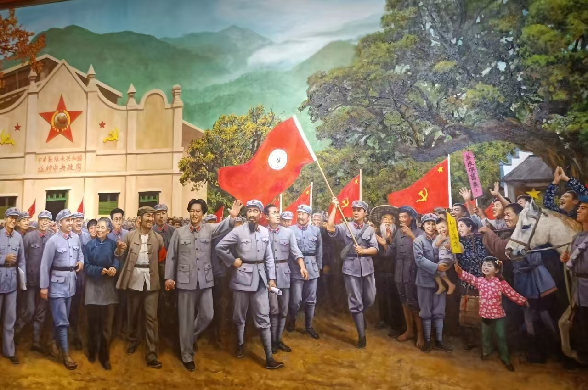
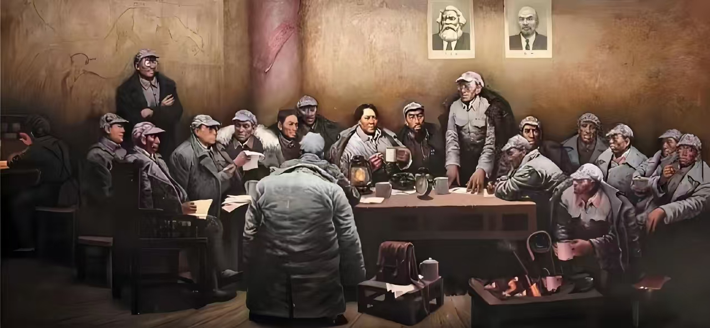
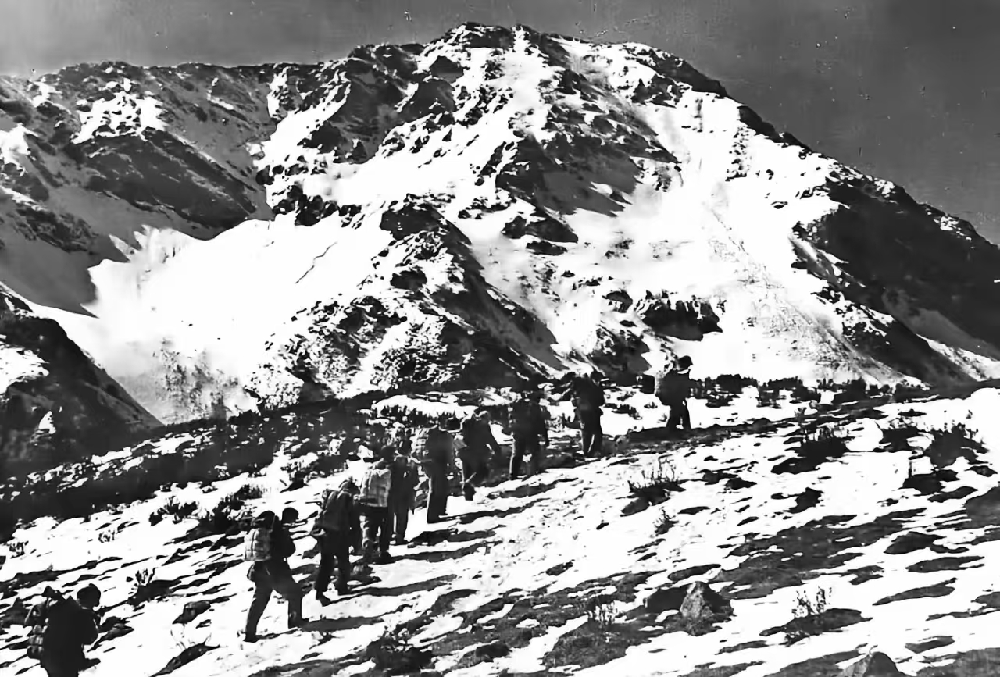
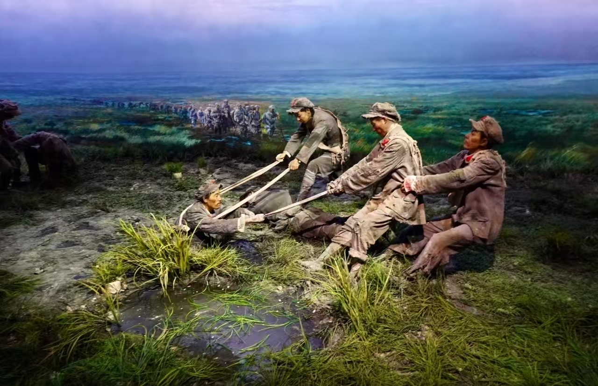
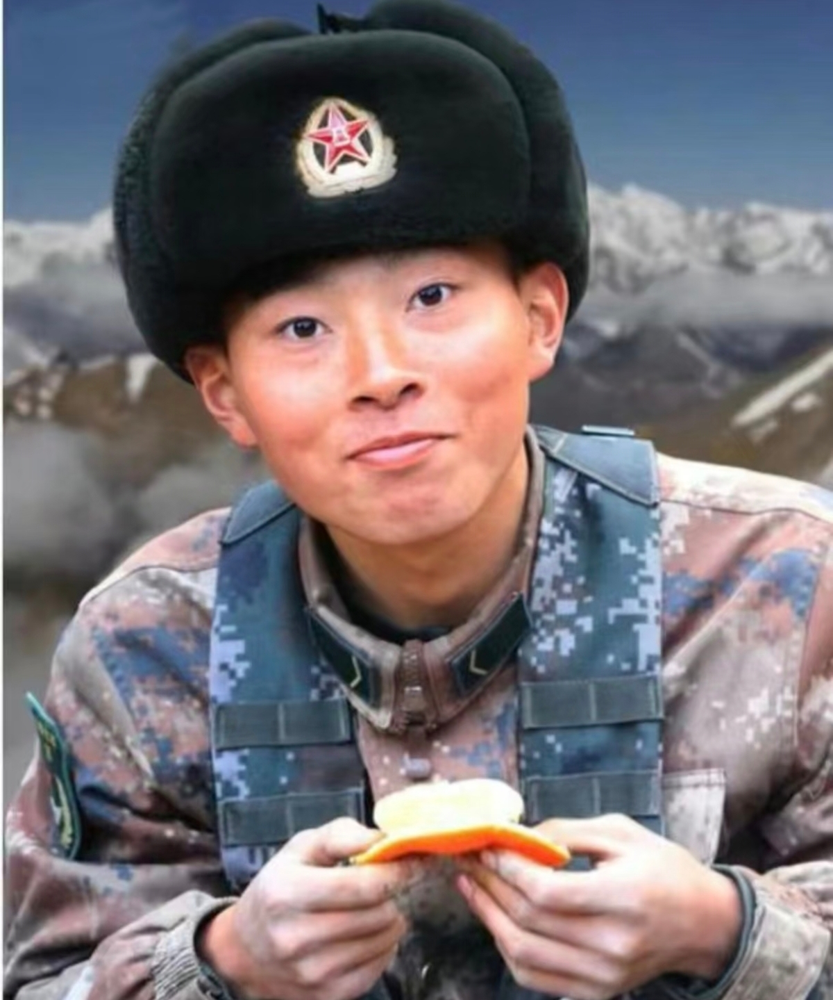
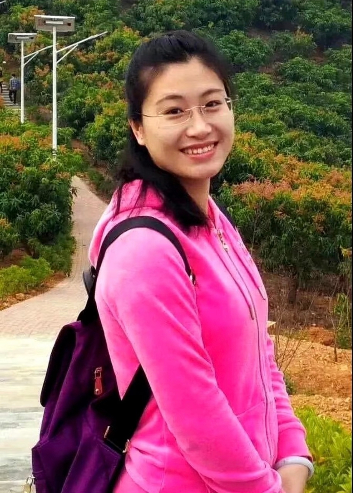
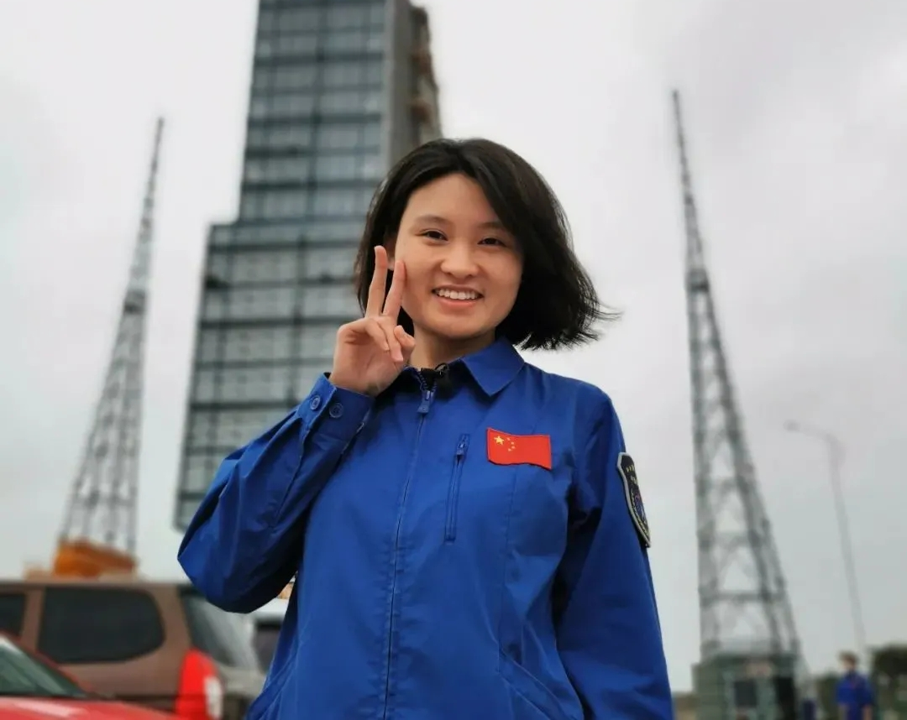
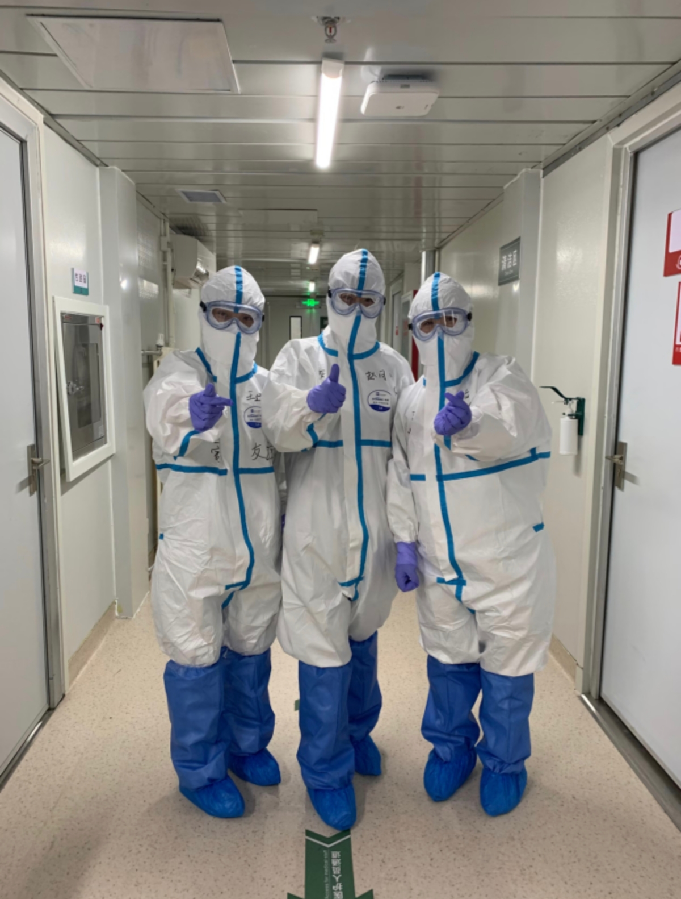
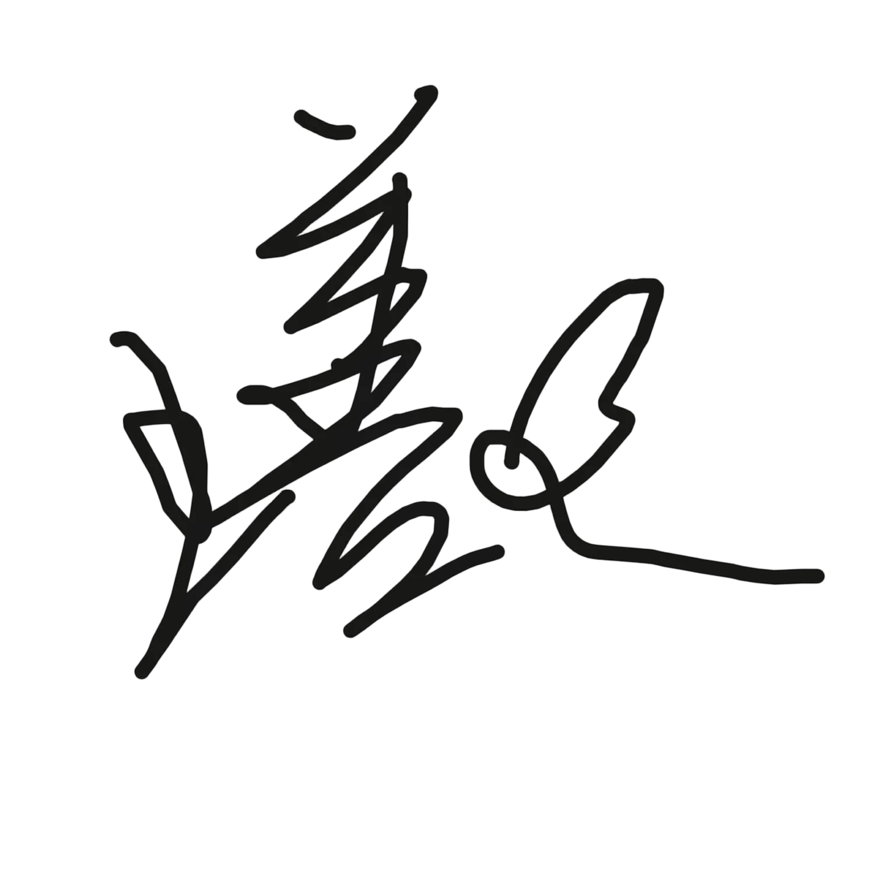

信 仰 之 路 · 两 万 五 千 里
1934年10月 — 1936年10月 · 历时两年 · 跨越十一省 · 两万五千里

1934年10月 · 江西瑞金
由于第五次反"围剿"失败，中央红军主力被迫从江西瑞金等地出发，告别中央革命根据地，开启震惊世界的万里长征。数万红军战士怀揣革命理想，踏上未知的远征之路，自此拉开二万五千里长征的伟大序幕。
1934年11月—12月 · 湘江流域
红军在湘江流域与国民党军队展开惨烈决战。此战红军损失惨重，从出发时的八万余人锐减至三万余人，无数革命先烈血染湘江。惨烈的战斗让全党全军深刻意识到错误指挥的危害，为遵义会议的召开埋下重要伏笔。

1935年1月 · 贵州遵义
中共中央在贵州遵义召开政治局扩大会议，纠正党内"左"倾错误军事路线，确立毛泽东同志在党中央和红军的领导地位。此次会议是中国革命生死攸关的伟大转折点，在极端危急的关头挽救了党、挽救了红军、挽救了中国革命。
1935年1月—3月 · 川黔滇边境
遵义会议后，红军在川黔滇边境四渡赤水河，灵活机动调动敌军，声东击西、迂回穿插，彻底打乱国民党围追堵截的军事部署，跳出数十万敌军包围圈，成为长征史上最为经典的机动战例，尽显高超军事指挥艺术。
1935年5月 · 云南皎平渡
红军趁敌军防备空虚，连夜急行军抢占皎平渡口，不费一枪一弹顺利渡过金沙江，彻底摆脱国民党主力部队的围追堵截，成功实现战略突围，红军自此取得长征路上决定性的战略主动权。
1935年5月29日 · 四川泸定
大渡河水流湍急，泸定桥是唯一通道。二十二名红军勇士冒着枪林弹雨，攀爬光秃秃的铁索奋勇冲锋，以无畏的牺牲精神攻克天险泸定桥，冲破敌军最后封锁，为北上抗日打通生死要道。

1935年6月 · 四川夹金山
红军翻越终年积雪、空气稀薄的夹金山等大雪山。战士们衣着单薄、粮草匮乏，顶着狂风暴雪艰难前行，凭借钢铁般的革命意志，征服一座座高寒雪山，战胜严酷自然险境，许多战士永远长眠于皑皑白雪之中。

1935年8月 · 松潘大草原
松潘大草原沼泽遍布、荒无人烟、缺衣少食。红军将士忍饥挨饿、踏泥涉水，在绝境之中相互扶持，靠着野菜草根充饥，历经重重磨难走完茫茫草地，铸就了永不言弃、百折不挠的伟大长征精神。
1936年10月 · 甘肃会宁
红一、二、四方面军在甘肃会宁胜利会师，标志着历时两年、纵横十一省、行程二万五千里的万里长征圆满结束。长征的胜利，是中国革命转危为安的关键，谱写了人类战争史上的不朽奇迹，铸就了永恒的长征精神。
从瑞金到会宁 · 跨越万水千山 · 交互式全息沙盘
全息战役沙盘 · 点击路线节点查看详情 · 基于真实地理坐标投影
1934年10月，中央红军主力8.6万余人，从江西瑞金、于都等地集结出发。 在第五次反"围剿"失败后，为了保存革命力量，中共中央和中央红军 被迫实行战略大转移。于都河畔，苏区群众含泪相送， 红军将士告别故土，踏上两万五千里征程。
中共中央政治局在贵州遵义召开扩大会议。会议批判了博古、李德的 "左"倾军事路线，取消了博古、李德的最高军事指挥权， 事实上确立了毛泽东在红军和中共中央的领导地位。 这次会议是中国共产党第一次独立自主地运用马克思主义基本原理 解决自身路线、方针和政策问题，标志着中国共产党从幼年走向成熟。
遵义会议后，毛泽东指挥中央红军在川黔滇边境地区展开高度灵活的运动战。 一渡赤水、二渡赤水、三渡赤水、四渡赤水——三个月中四次往返赤水河， 声东击西，忽南忽北，佯攻贵阳，威逼昆明，以3万兵力巧妙 摆脱了国民党数十万大军的围追堵截。此役被毛泽东本人视为 其军事生涯的"得意之笔"，也是世界战争史上以少胜多的运动战典范。
中央红军先头部队红四团接到命令后，一昼夜急行军240里， 于5月29日凌晨抵达泸定桥西岸。此时桥面木板已被守敌拆除大半， 只剩下十三根悬空的铁索。由22名勇士组成的突击队， 在连长廖大珠率领下，冒着东岸敌军的密集火力， 攀踏铁索向对岸冲锋。后续部队边铺木板边推进， 经过两小时激战，成功夺取泸定桥，为大部队打开了北上通道。
1935年6月，红军开始翻越海拔4000多米的夹金山等雪山。山顶终年积雪、 空气稀薄，战士们身着单衣草鞋，以辣椒水御寒。许多战士坐下休息后 便再也没能站起来，冻僵的身躯永远留在了雪山上。 随后进入松潘草地（今若尔盖湿地），沼泽遍布、气候无常。 在断粮的情况下，红军以草根、树皮、皮带充饥， 无数战士陷入沼泽牺牲。但红军以超越人类极限的毅力， 走出了这片"死亡之地"。
1936年10月，红一、红二、红四方面军在甘肃会宁、静宁地区胜利会师。 历时两年的长征宣告结束。红军以超乎常人的毅力走过了两万五千里， 跨越11个省，翻越18座大山，渡过24条大河。 从出发时的8.6万人到会师时的3万余人，数万名红军将士 将生命永远留在了长征路上，但他们用鲜血和生命铸就了 永不褪色的长征精神。
跨越时空 · 永不褪色的精神丰碑
红军将士坚信革命必胜的理想，即使面对围追堵截、雪山草地、 饥饿寒冷，信念从未动摇。正是信仰的力量，支撑着他们走完了 常人所不能走的路。
湘江之畔五万英魂、雪山之上冻僵的身躯、草地深处吞噬生命的沼泽—— 红军以超越常人的勇气直面死亡，用生命铺就了通往胜利的道路。
遵义会议是中国共产党独立自主解决中国革命问题的开端。 不盲从他国经验，将马克思主义与中国实际相结合， 这是长征留下的宝贵启示。
两条腿走完两万五千里，日均行军七十里，跋涉十一省， 翻越十八座大山，渡过二十四条大河——每一个数字背后 都是不屈不挠的钢铁意志。
干粮分着吃、棉衣让着穿、伤病员背着走， 生死与共的同志情谊将五湖四海的战士凝聚成不可战胜的力量。
秉心传薪火 · 我行其野，芃芃其麦 · 他们走在时代的前沿，将长征精神内化为生命底蕴
（点击人物画像，解锁红色征程故事）




怀揣这份精神力量，坚守初心踏实前行，不负岁月与先辈期许


